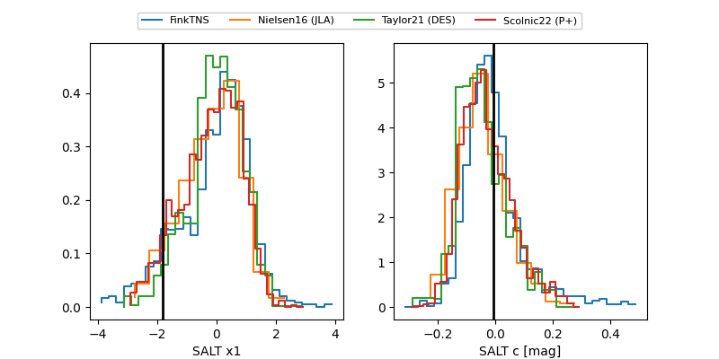

FINK: ZTF25abnfnat
Lasair: ZTF25abnfnat
ALeRCE: ZTF25abnfnat
TNS: 2025wnu
YSE: 2025wnu
ZTF25abnfnat (ztf,fink)
2025wnu (tns,yse)
ATLAS25kys (atlas)
equatorial (ra, dec) = (344.3311,+16.64690)
galactic (l, b) = (87.3170,-38.20870)

last atlasc=19.54, ps1::g=19.89, ps1::i=19.50, ps1::r=19.49, ps1::y=19.46, ztfg=19.51, ztfr=19.09
1 atlasc, 3 ps1::g, 3 ps1::i, 4 ps1::r, 1 ps1::y, 6 ztfg, 7 ztfr detections